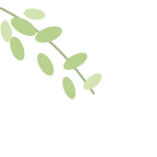

CHIE NO WA
ちえの輪
地域支え合い研究会。一人ひとりが社会に目を向け、気づきと学びをいただく交流の場です。
ホーム › ちえの輪
地域支え合い研究会とは
2016年12月発足。誰もが居場所と役割を持ち、住み慣れたまちで安心してその人らしく暮らしていける共生社会を目指して、医療・介護・子育て・教育・防災など、毎回ちがうテーマとゲストで学び合っています。どなたでも参加できます。
- 日時
- 原則 毎月1回 土曜 18:00〜
- 会場
- 西原コミュニティセンター 2階AB（宇都宮市西原2-5-42）
- 参加費
- 300円（軽食代）差し入れ大歓迎
- 連絡先
- info@f-chie.jp

最近の研究会
2016年の発足から106回。過去のテーマの一部です。
- 第106回「困った」だけでなく「やってみたい」から始まる地域づくり塩田 典保 氏（Sunrise Project ほか）
- 第105回健康格差への取り組み 〜生協ふたば診療所の「いま、ここ」〜千嶋 巌 氏（生協ふたば診療所）
- 第103回地域が目指す「社会的処方」について語り合おう萩原 秀子 氏・松澤 英克 氏
- 第102回子どもの自殺・性被害を防ぎ“幸せに生きる力”を育む地域アプローチ柚木 理恵 氏（ゆずき助産院）
- 第101回ごちゃまぜで挑む、多世代交流の地域コミュニティづくり濱野 将行 氏（一般社団法人えんがお）
- 第100回地域支え合い研究会が目指す 地域共生のまちづくり村井 邦彦 氏（村井クリニック）
- 第99回うりずんの風に吹かれて 〜出会いは人生を変える〜髙橋 昭彦 氏（ひばりクリニック・うりずん）
- 第98回子ども若者・引きこもり支援の神髄中野 謙作 氏（栃木県若年者支援機構）
- 第96回不登校増加改善への道 徹底討論柳沢 邦夫 氏（元小学校校長）
- 第95回フードバンク生鮮食品プロジェクトとその展開岩本 啓子 氏（認定栄養ケア・ステーション宇都宮）